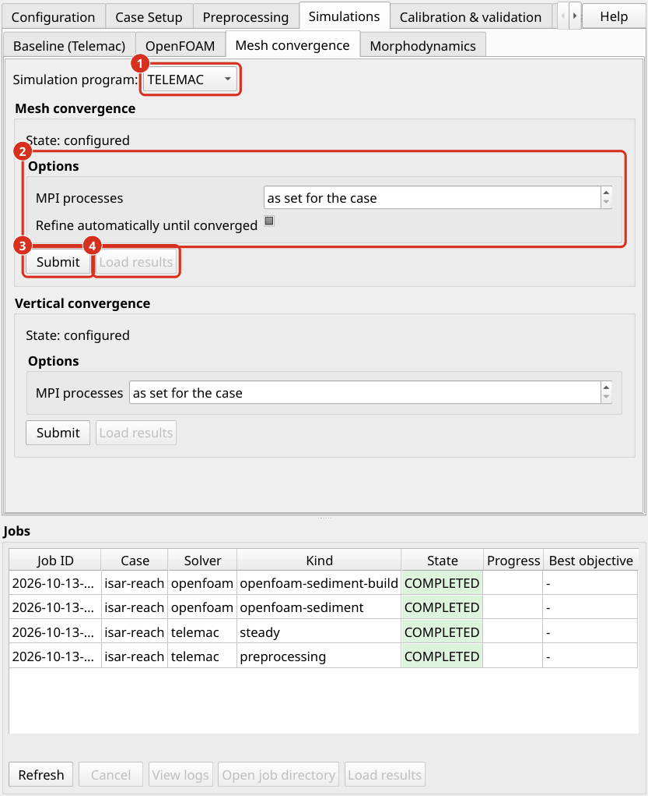

Mesh convergence
Every numerical result depends to some degree on the mesh on which it was computed. A mesh convergence study measures this dependence: it repeats the same simulation on meshes of different resolution and compares the results. The study answers two questions. How large is the uncertainty of the results that stems from the mesh? And which is the coarsest, and therefore fastest, mesh that is accurate enough?
Run the study after the first TELEMAC dry run has shown that the model works (TELEMAC dry runs 2D/3D), and before the calibration.
Mesh study setup
The study follows the procedure of Celik et al. (2008). It uses a sequence of four meshes. Between two successive meshes, all edge lengths differ by the refinement ratio of 1.3, which is the smallest ratio that Celik et al. (2008) recommend. Smaller ratios produce meshes that are so similar that their differences disappear in the numerical noise.
Mesh |
Edge lengths |
Role |
|---|---|---|
coarse |
1.3 times the case values |
shows the trend |
baseline |
the values of the case |
the mesh of the case |
fine |
case values divided by 1.3 |
used for the convergence criterion |
finest |
case values divided by 1.69 |
used for the convergence criterion |
Each mesh is run at the constant discharge of the case until the flow is steady. All runs start with a pre-wetted channel, to save the time for filling the reach (Initial conditions). aXqua then reads the water depth and the flow velocity at the positions of the field measurements and compares them between the meshes.
The following options can be changed:
Option |
Default |
Meaning |
|---|---|---|
|
0.05 |
Accepted uncertainty of the results due to the mesh (5 %). |
|
1.3 |
Ratio of the edge lengths of two successive meshes. |
|
1, 2 |
Number of meshes coarser and finer than the baseline. |
|
off |
Add finer meshes automatically until the criterion is met. |
|
from the case |
Number of processor cores. |
Turbulence model. The automatic selection of the turbulence model depends on the cell size (TELEMAC choices). To keep the meshes comparable, the study uses the turbulence model of the baseline mesh on all meshes. The report indicates for each mesh whether its resolution would call for a different model. If the recommended mesh falls into another range than the baseline, set hydrodynamics.turbulence_model to the model named in the report and repeat the study.
Lower limit of the cell size. A mesh cannot be refined without limit. When the cells become smaller than the roughness length \(k_s\) of the bed, the mesh starts to resolve individual roughness elements whose effect is already contained in the roughness coefficient. The report marks such meshes.
Run mesh convergence study
In the plugin, go to the tab Simulations, sub-tab Mesh convergence, select the simulation program (TELEMAC or OpenFOAM), set the options and click Submit. In a terminal:
axqua submit <case-file> --kind mesh-convergence
axqua submit <case-file> --kind mesh-convergence --option tolerance=0.05 --option auto_extend=true
axqua submit <case-file> --kind openfoam-mesh-convergence


The sub-tab Mesh convergence of the tab Simulations. (1) The simulation program whose mesh is studied, TELEMAC or OpenFOAM. (2) The options of the study. (3) Submit starts the study as a job. (4) Load results adds the results to the map.
Plan sufficient time and disk space:
Time. Each mesh requires its own preprocessing and its own simulation. With every refinement step, the number of cells grows and the time step shrinks, so that the computing time roughly doubles from one mesh to the next finer one. The finest mesh dominates the total time. A study typically takes several times as long as the dry run of the case.
Disk space. Each mesh has its own folder with its model and its results. For fine meshes, a single result file can reach several hundred megabytes.
With OpenFOAM. The study of the OpenFOAM model refines the plan spacing of its lattice (openfoam.cell_size, or the spacing that openfoam.cell_size_factor derives from the TELEMAC mesh) with the same refinement ratio of 1.3, one coarser and two finer than the baseline, and keeps the number of vertical layers. Each mesh is built from the same steady 2D TELEMAC result (the warm-up, aXqua warm-up concept) and run to openfoam.end_time. The water depth and the depth-averaged velocity of each column are compared at the same points as in the TELEMAC study, so that the grid convergence index of both models means the same. The checks of the TELEMAC turbulence model and of the bed roughness do not apply to the OpenFOAM meshes and are not made. Each mesh of a three-dimensional model is expensive: the finest of the four meshes has about 2.9 times as many columns as the baseline, and its time step is about 1.7 times shorter. The study writes into axqua-case/postprocessing/openfoam-mesh-convergence/.
The study can be interrupted. When it is started again, the meshes that are already complete are reused. If a refined mesh cannot be created or its simulation fails, the study ends and reports the meshes that were completed. This marks the practical limit of refinement for the case.
Study report
The study writes its results into the folder axqua-case/postprocessing/mesh-convergence/. The central file is the workbook mesh-convergence.xlsx, and mesh-convergence.txt contains the same report as text. The script mesh_convergence_study.py of a case folder runs the same study and writes into axqua-case/mesh-convergence/ instead. The file README.md in the same folder explains all other files.
The workbook lists for each mesh the number of cells, the computing time and the following quantities:
the relative change of water depth and flow velocity compared with the next coarser mesh;
the grid convergence index (GCI) of the finest three meshes. The GCI estimates, in percent, how far the result of a mesh is from the result of an infinitely fine mesh. It is the measure of the uncertainty that stems from the mesh;
the checks of the turbulence model and of the lower limit of the cell size described above.
The study is passed when the GCI of the finest meshes is below the tolerance. The default tolerance of 5 % corresponds to common engineering accuracy (Celik et al. 2008). The GCI is only meaningful when the results approach a limit regularly with refinement. aXqua verifies this condition. If it is not met, the relative change between the two finest meshes is used as the criterion instead, and the report says so.
Recommended cell size. The report recommends the coarsest mesh whose results lie within the tolerance, and states how much faster this mesh is than the finest one. To adopt it, set mesh.size_scale in the case file to the ratio of the recommended and the baseline edge length, which scales the edge lengths of all mesh zones, and repeat the preprocessing.
Interpretation. The purpose of the study is not to find a mesh on which the results no longer change. Such mesh independence is practically not attainable for a model of a natural water body. Each refinement resolves more detail of the terrain, shifts the edge of the water and changes the conditions under which the turbulence model is valid, so that the results keep changing slightly. The purpose is to select a mesh whose remaining uncertainty is known and small in comparison with the uncertainty of the field measurements, at a computing time that the subsequent calibration with its many simulations can afford.
Keep the selected mesh for all following steps. The calibration compensates a part of the mesh error through the calibrated parameters. Parameters that were calibrated on one mesh are therefore not valid on another one.
Reference
Celik, I. B., Ghia, U., Roache, P. J., Freitas, C. J., Coleman, H., and Raad, P. E. (2008). “Procedure for estimation and reporting of uncertainty due to discretization in CFD applications.” ASME Journal of Fluids Engineering, 130(7), 078001.